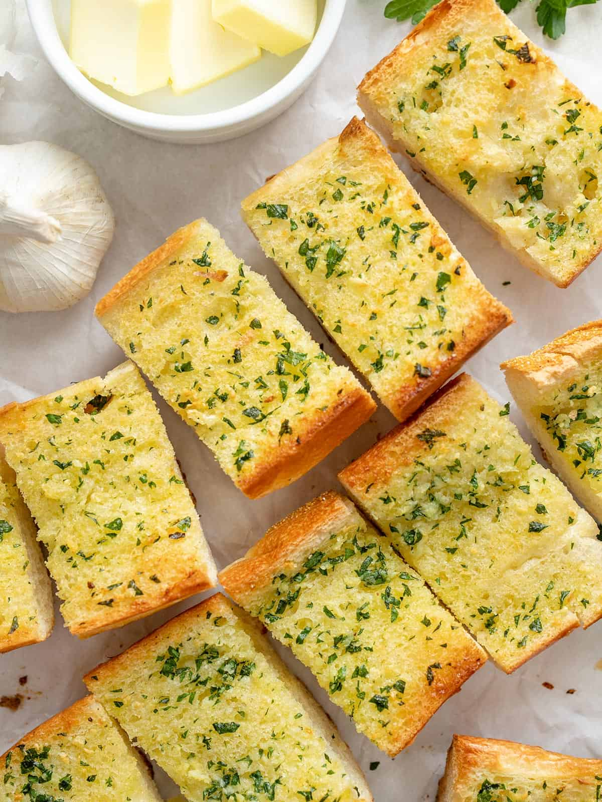

Garlic Bread

Garlic bread is a beloved side dish that combines the comforting flavors of freshly baked bread with the rich, aromatic taste of garlic and butter. Typically made from a baguette or Italian bread, the loaf is sliced and spread with a mixture of melted butter, minced garlic, and often parsley or other herbs for added flavor. The bread is then toasted or baked until it achieves a crispy, golden-brown exterior while remaining soft and fluffy inside. Sometimes, a sprinkle of Parmesan cheese is added for a touch of savory richness. Garlic bread is a perfect accompaniment to pasta dishes, soups, and salads, adding a deliciously warm and garlicky touch to any meal.
Ingredients
- Bread
- Butter
- Olive Oil
- Fresh Garlic
- Garlic Powder
- Parsley
- Salt
Steps
- Preheat the oven to 400ºF. In a bowl, stir together the room-temperature butter, olive oil, minced garlic, garlic powder, chopped parsley, and salt until relatively smooth (a few small lumps of butter are okay).
- Cut the loaf in half, into two 12" long pieces, then cut each piece open lengthwise. Lay the bread on a baking sheet cut sides facing up. Spread the garlic butter mixture evenly over the open surfaces of the bread.*
- Bake the bread for 10-15 minutes, or until the edges are golden brown and crispy. Bake for less time if you prefer a softer garlic bread, and more time if you prefer a crispier garlic bread. Cut the bread into 2-inch sections and serve hot.